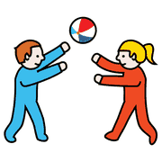
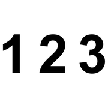
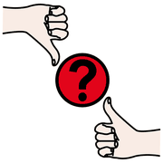
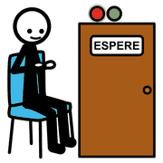

I fondamenti, modulo 3
Dal gioco al simbolo
Un concetto matematico sale una scala: dal corpo che gioca alla regola scritta. Saltare i gradini significa costruire sul vuoto.
Che cosa succede a ogni gradino

giocare parlare
parlare disegnare
disegnare
numeri| Fase | Che cosa fa il bambino | Che cosa fa l'insegnante |
|---|---|---|
| Esperienza ludico-corporea | Gioca, si muove, incontra un problema vero. | Progetta il gioco perché contenga il problema. |
| Azioni manipolatorie | Ripete l'esperienza con oggetti: mattoncini, corde, cerchi. | Riduce la scala, mantiene la stessa struttura. |
| Riflessione sulle azioni | Racconta che cosa ha fatto e perché ha funzionato. | Fa domande aperte, non dà la risposta. |
| Rappresentazione | Disegna, usa icone, poi segni convenzionali. | Accoglie i disegni diversi e li confronta. |
| Formalizzazione | Scopre una regola e la applica a situazioni nuove. | Propone nuovi problemi che chiedono la stessa regola. |
da evitare
Gli errori più comuni
 attenzione
attenzione
sbagliare
aspettare- Partire dalla schedaLa scheda è il quarto gradino: arriva dopo il gioco, non al suo posto.
- Fermarsi al giocoSenza riflessione il gioco resta divertimento e non diventa concetto.
- Correggere troppo prestoIl tentativo sbagliato è materiale prezioso per la discussione.
- Un solo modo giustoPiù rappresentazioni dello stesso fatto aiutano ad astrarre.